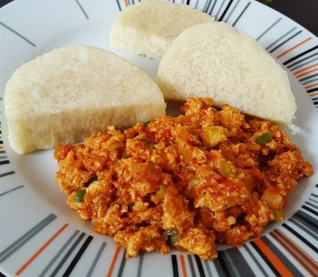

My favourite food
My favourite food is Yam and Egg sauce.
It is very easy to prepare and it is very healthy and nutritious.
Ingredients
- Yam
- Eggs
- Tomato
- Onions
- Vegetable oil
- Pepper
- Salt
Steps to make yam and egg sauce
- Cut the Yam and boil it for 10-15mins
- Blend the tomatoes and onions together
- Put the blended tomatoes and onions in a pot with vegetable oil
- Then put in your spices
- Break some eggs, whisk it then pour it into the pot,leave it for some minutes
- Then you have your Yam and Egg Sauce
